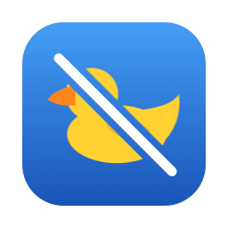

Stop FaceTime from lowering your music on Mac
Duckproof is a free, open-source menu bar app that turns off FaceTime audio ducking, so music, videos and games keep their volume during calls.
Download for macOS🔊 Turn the sound on: hear the music get ducked when the call starts, then come back with Duckproof.
Sound familiar?
Every time I start a FaceTime call, my music gets super quiet.
YouTube is almost silent while I'm on FaceTime, and there's no setting to stop it.
That's audio ducking: during a FaceTime call, macOS automatically lowers the volume of every other app. Apple gives you no way to turn it off. Duckproof does.
What you get
How it works
macOS ducks other apps on the audio device FaceTime plays to. Duckproof adds a small virtual audio device, also called Duckproof. FaceTime plays into it, and Duckproof forwards the call to your real headphones, so macOS has nothing to duck.
Before: FaceTime ──► AirPods ◄── Music (Music gets lowered) After: FaceTime ──► Duckproof ──► AirPods ◄── Music (nothing is lowered)
Why it works this way
Another way to beat ducking is to capture every app's audio and re-play it at full volume. That puts your music, videos and games through a third-party app: possible delay, clipping, and Spatial Audio folded down to stereo. Duckproof only touches the call, only while it's on, and doesn't rely on any undocumented macOS trick.
Install in a minute
- Download
Duckproof-x.y.z.pkgfrom the latest release and open it. It's signed and notarized by Apple. - Duckproof installs its audio driver (no restart needed) and opens.
- In FaceTime, choose Video › Audio Output › Duckproof. Done.
FAQ
Audio sounds muffled or like a phone call?
You're probably using your headphones' microphone over Bluetooth. When an app uses the mic of Bluetooth headphones (AirPods included), they have to switch to a "headset" mode that uses a low-quality codec, and all your audio goes mono and compressed, not just the call.
Fix: in FaceTime, open the Video menu › Microphone and pick another mic, such as your Mac's built-in microphone or your iPhone. Your headphones then stay in high-quality mode. FaceTime remembers this choice.
Why does Duckproof ask for microphone access?
Duckproof reads the virtual audio channel FaceTime plays into, and macOS counts reading any audio channel as "using the microphone". Duckproof never listens to your real microphone; the orange indicator only shows during calls.
Does it work with Zoom, Discord, Teams or WhatsApp?
Yes, if the app lets you choose a speaker: pick Duckproof in its audio settings. If Zoom, Teams, Discord, Slack, WhatsApp, Webex or a browser call is still lowering your other apps, Duckproof sends a notification telling you where to change it.
Does it add latency?
About 20 ms on the call only, unnoticeable next to Bluetooth's own latency. Your music and videos are never delayed.